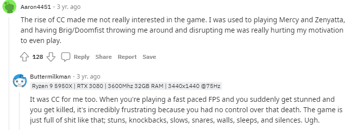

What is "crowed control"?
 In Overwatch, crowd control (often shortened as CC) refers to an ability that
hinders or prevents an enemy's movement, weapon usage, and/or ability usage. Many heroes have forms of crowd
control, usually in forms that stun enemies or push them away.
In Overwatch, crowd control (often shortened as CC) refers to an ability that
hinders or prevents an enemy's movement, weapon usage, and/or ability usage. Many heroes have forms of crowd
control, usually in forms that stun enemies or push them away.
A video of popular streamer "XQC" showing a prime example of the oppresive nature of "cc"
"Aaron4451" and "Buttermilkman" explained it best in this reddit thread
